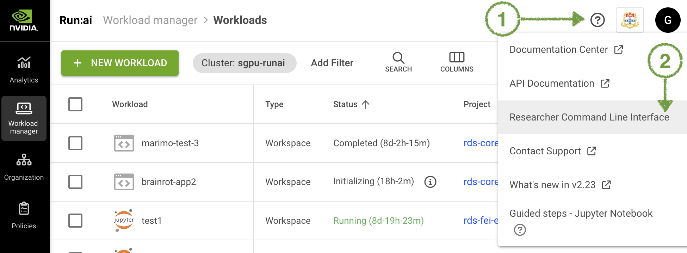
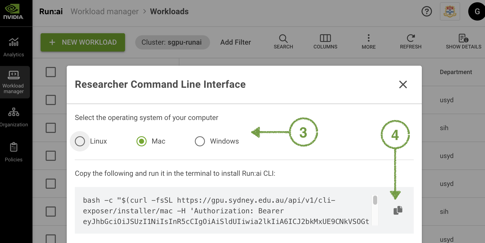
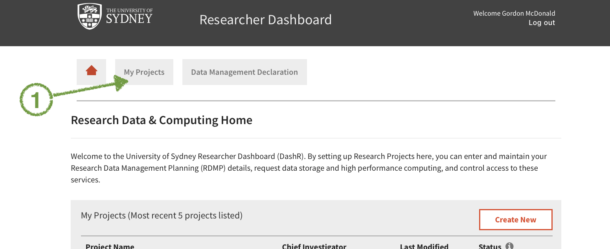
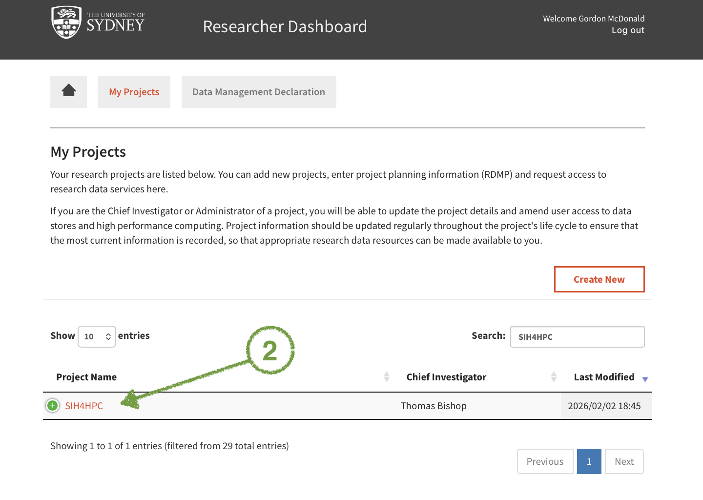
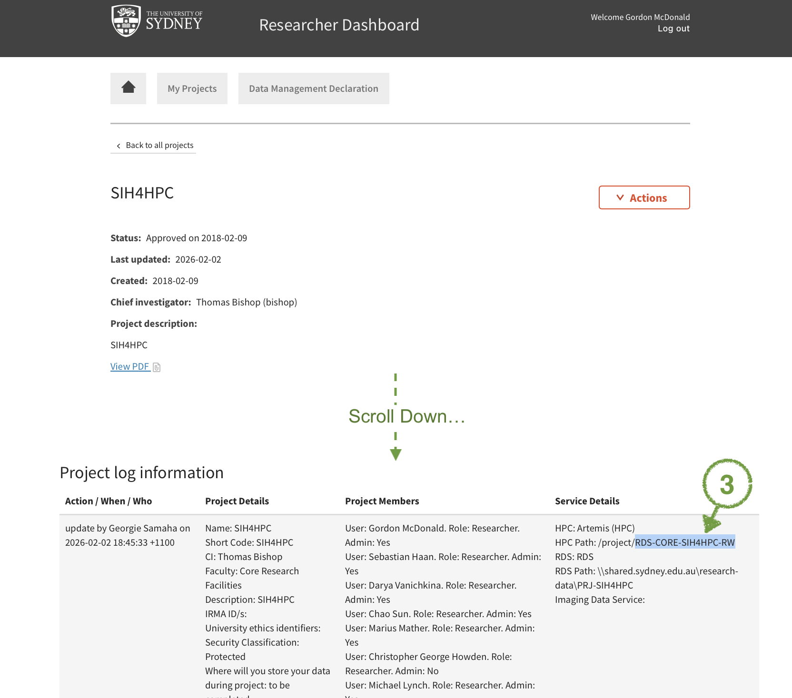

# Enter your DaSHR project code above.RunAI at Sydney
Submit workloads to the Sydney GPU Cluster using the RunAI command line interface.
1 · Install the RunAI CLI
The CLI binary is downloaded directly from your cluster portal. Log in to gpu.sydney.edu.au, then click the Help icon (?) in the top-right corner of the page.


The Help panel includes install commands pre-filled with your cluster's URL. Copy the command for your operating system and run it in your terminal.
2 · Log in
runai loginThis opens a browser window. Sign in with your university SSO credentials. Your session token is stored locally and refreshed automatically.
3 · Set your default project (optional)
Save yourself typing -p on every command:
runai config project <your-project-name>4 · Useful day-to-day commands
# List your running workloads
runai list workloads
# Describe a specific workload
runai describe workload <job-name>
# Stream logs
runai logs <job-name> -f
# Open an interactive shell inside a running workload
runai exec -it <job-name> -- bash
# Delete a workload
runai workspace delete <job-name> -p <project>References: RunAI CLI reference (Sydney cluster)
Fill in your project code, choose a workload type, and copy the generated command.
Where do I find my project code?
Log in to dashr.sydney.edu.au and follow these steps:


